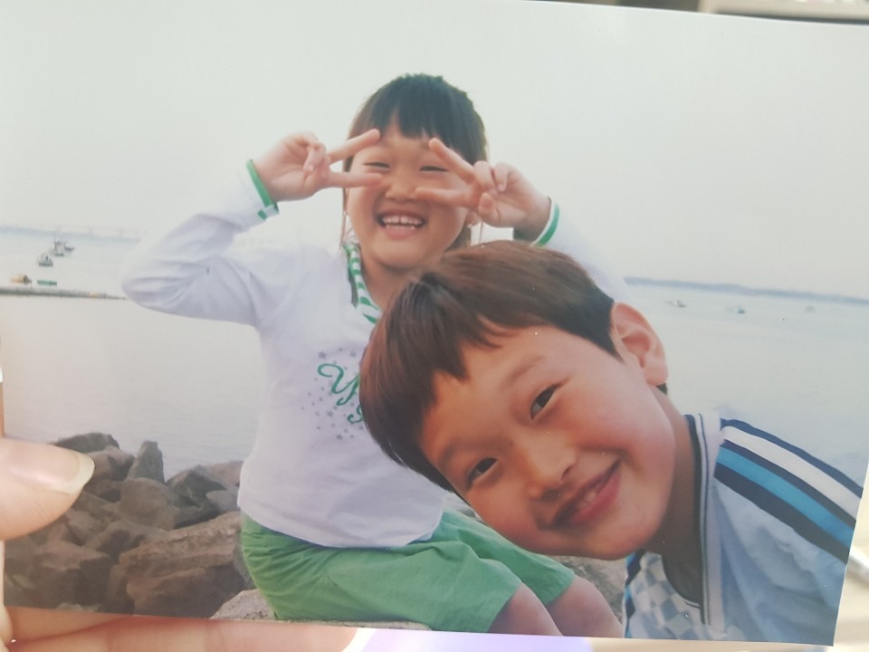

anyway 그렇게 초2쯤 다시 대전으로 이사를 와서 거기서보다 그래도 나은 생활을 했지. 옆에 할머니나 이모가 있었으니 말야. but 엄마가 재혼을 하면서 다시금 큰 불행이 다가왔지. 근데 내가 그때 골목대장이였거든? 애들 다 끌고다니면서 여기저기 놀러다녔어. 어찌나 동네 떠나가라 소리지르면서 놀았는지 애들이랑 놀고있으면 내 grandma가 4층에서 창문열고 맨날 소리질렀어. 양! 이 시보랄넘드라 시끄러워!@~!~!~!~ 그때는 진짜 jonna 무서워서 도망갔는데 지금 생각해보면 그렇게 매일 노는 낙에 초딩시절은 나름 재밌게 보낸거같아. 불행안의 행복이였달까.
